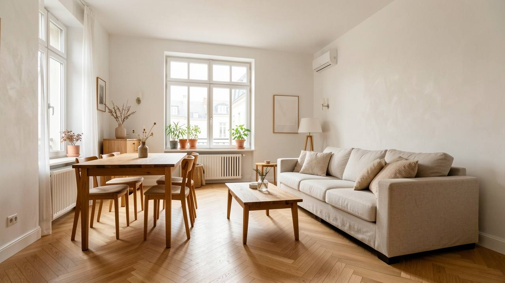
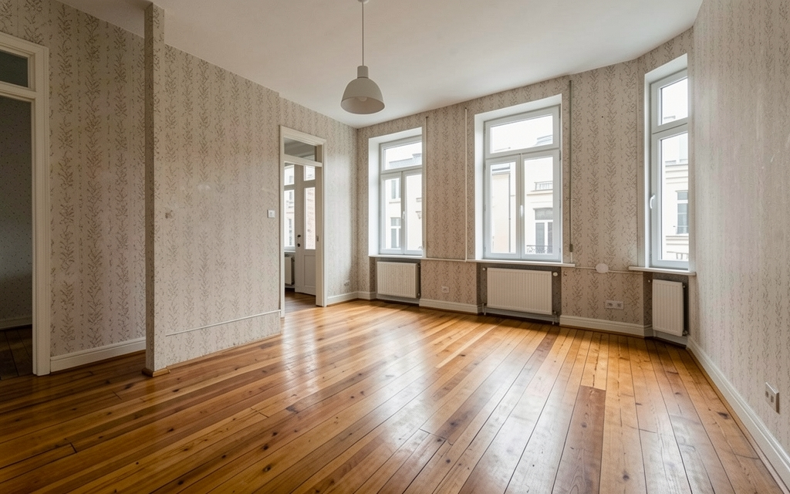
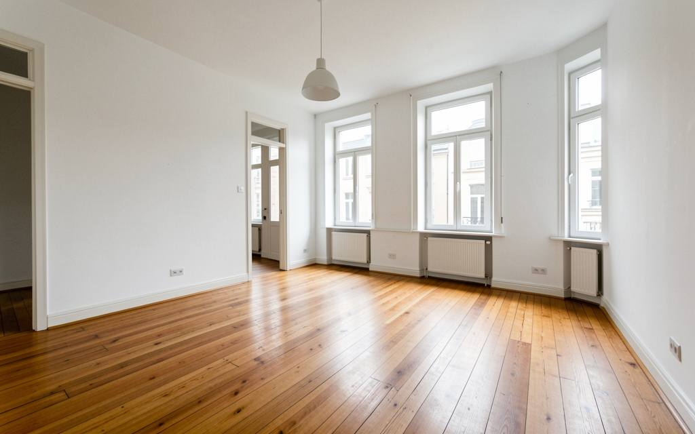

Distribución
Si hace falta, movemos tabiques. Aquí el salón y el comedor eran dos habitaciones; lo decidimos sobre el plano antes de tocar nada.

Inicio / Reformas integrales
Distribución, instalaciones y acabados coordinados de principio a fin.
Recorre la casa. Todo lo que señalamos entra en el precio cerrado.
Si hace falta, movemos tabiques. Aquí el salón y el comedor eran dos habitaciones; lo decidimos sobre el plano antes de tocar nada.
El mismo suelo en toda la casa, sin escalones entre habitaciones. Aquí, roble en espiga.
Electricidad, fontanería y calefacción nuevas. Lo fotografiamos todo antes de cerrar las paredes y te damos el boletín.
Ventanas que aíslan del frío y del ruido, y puertas interiores nuevas.
Alisados y pintados, de la entrada al último dormitorio.
La cocina, los baños y los permisos con la comunidad entran en el mismo proyecto y en el mismo precio. Diseña tu reforma en el panel y mira el precio mientras eliges.
Decidimos contigo cómo quieres distribuir la vivienda y por qué, antes de mover nada.
Planificamos el orden de los oficios antes de pedir el primer material.
Un jefe de obra es tu único contacto durante toda la reforma.
Revisamos el avance cada semana contigo, no solo al final.


Reforma integral
Redistribuimos un piso con pasillos estrechos y habitaciones cerradas: ahora tiene un salón más grande y un baño más.
Si están dentro del proyecto que presupuestamos, sí. Todo lo acordado va en el mismo precio, sin partidas sueltas después.
Entre 8 y 14 semanas, según los metros y si cambia la distribución. Es un plazo orientativo: te damos la fecha real en el presupuesto.
Nosotros. Comprobamos qué necesita tu comunidad o el ayuntamiento y hacemos el trámite antes de empezar.
Lo retiramos con contenedor autorizado y lo recogemos cada día de obra, no se acumula en la vivienda.
La misma en toda la obra: por escrito, en el contrato, sin depender de a quién le preguntes.
Visita, presupuesto cerrado y fecha de entrega firmada.
O llámanos:
600 000 000